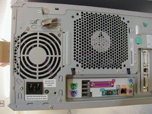
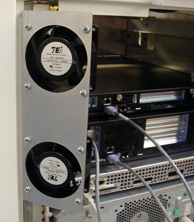
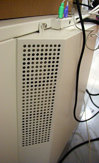
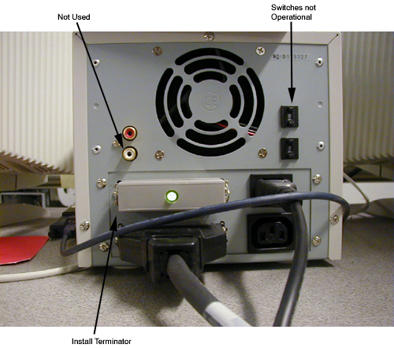

Operating Documentation
Direction 5134894-800, Rev# 9
GOC4 Upgrade Installation & Service Information
Operating Documentation |
| Required Persons | Preliminary Reqs | Procedure | Finalization |
|---|---|---|---|
| 1 | Timing Not Applicable | Timing Not Applicable |
Procedure Effectivity:
| Assembly: | GOC4/LCGOC/Dimension CONSOLE |
| Subassembly: | Console |
| Purpose: | Inspect and Clean Console Components |
| Last Revised: | 8 August 2007 |
| Item | Qty | Effectivity | Part# | Manufacturer | |
|---|---|---|---|---|---|
| Flat-blade Screwdriver | 1 | - | - | - | |
| Metric Allen Wrench Set | 1 | - | - | - | |
| Safety Glasses | 1 | - | - | - | |
| Vacuum Cleaner w/HEPA Filter | 1 | - | - | - | |
| Item | Qty | Effectivity | Part# | Manufacturer |
|---|---|---|---|---|
| Monitor Cleaning Solution (Windex) | AR | - | - | - |
| Can of Compressed Air (Aero-Duster) | AR | - | - | - |
| Handi Wraps Lint Free Towels | AR | - | - | - |
| GRE PM Kit (Optional) | AR | - | - | - |
Vacuum the following:
Console Fans and Air Intake Screen (Filters if present)
Modules Fans and Air Intake Screens
Console Interior
SCSI Tower Fan and Air Intake Screens
Clean the following components:
Monitors - Clean monitor face and check for burnt screen
Keyboard - Clean keys and using Aero Duster clean debris from keyboard
SCIM - Clean push buttons, and using Aero Duster clean debris from SCIM
Trackball Clean switches and using Aero Duster clean debris from trackball
Mouse - Replace as needed
On the Cabinet and the Desktop surface:
Perform a visual inspection
Check EMC gaskets
Clean all fans
Check for loose and worn cables
Operational Functional Check:
MOD & DVD
Mouse, Keyboard, SCIM & Trackball
Check that the fan in the rear of the SCSI tower is operational.
Remove console front cover and check that console back chassis fans are operational. (Power On Check.)
Check that the fan in the rear of the computer is operational.
Turn OFF Power on front of console.
Turn OFF power panel breaker.
LOCK OUT / TAG OUT!
Using a vacuum cleaner with HEPA filter and soft brush, carefully clean the interior, inlets and fan exhaust ports. Verify that the console is clean and clear of dirt and obstructions.
| NOTE: | If the amount of dust is thick, remove this dust from screens and fans by hand. |
Vacuum the following:
Illustration 1: Rear HP xw8200 (Computer)

Illustration 2: Console Front (Computer Air Intake)

Illustration 3: Rear Fans (Console Fans)

Illustration 4: Rear Fans Back View

Illustration 5: Console Left Side (Console Interior)

Illustration 6: Front (GRE Modules)

Illustration 7: Console Right Side (Console Interior - Westville Hardware Shown)

Illustration 8: Front and Rear Vents (Console Air Intake)

Illustration 9: SCSI Tower Fan

Illustration 10: SCSI Tower Front

Using cleaning materials supplied in the install support kit, perform the following actions:
Use Windex and a damp lint free towel to clean the monitor screen and SCSI Tower front bezel.
Use 409 cleaner and a damp lint free towel to clean the keyboard, SCIM, trackball, and desktop.
Use an Aero Duster or can compressed air to remove debris from the keyboard trackball. Replace any broken or damaged components.
Visually inspect the following items for wear:
All recon and computer cables should be tight to the touch.
Inspect the desk top, keyboard top, and their supports for damage and tightness.
| NOTE: | If you need to replace an item, refer to the IPL for the part numbers. |
Power-up console.
Remove LOCK OUT /TAG OUT Device.
Check that the mouse and keyboard cables are snug.
Turn ON power panel breaker.
Turn ON console front power switch.
Console boots to application level.
Check all console error logs for component problems.
Check that all components operate normally. Replace any intermittent component.
Replace the following items as needed:
Keyboard
Trackball
SCIM
Mouse
| NOTE: | A second mouse is shipped with the system. |
Set up the monitor contrast and brightness using the SMPTE Pattern.
If you are not on the Service Desktop, click the [SERVICE DESKTOP] icon.
Click the [IMAGE QUALITY] icon.
Select [INSTALL SMPTE IMAGE] . (Approximately 3-4 minutes.)
Display the SMPTE pattern. Use the browser to select Exam 1000, which contains the SMPTE pattern, and enlarge the image to full screen display.
Increase the Contrast to maximum. Adjust monitor contrast until the anatomical structure (window width) appears at the expected window levels.
Increase the Brightness to maximum. Adjust the monitor brightness the anatomical structure (window width) appears at the expected window levels.
Decrease the Brightness, until the raster just fades into, and matches, the monitor screen background. At this point, the 5% and 95% patches should be just visible.
If additional tweaking is required to attempt to match the monitor image to the filmed image, use only the brightness control.
If the CRT image exhibits any tearing or smearing of the alphanumeric characters, then reduce the contrast setting slightly until the tearing/smearing is just eliminated. The optimum setting for contrast is the highest setting that does not cause tearing/smearing of the alphanumeric characters.
You should always finish up by displaying and filming images of anatomy (typical heads and bodies), and asking the technologist to compare the CRT image to the film image.
To view SMPTE on text monitor, swap the video cable.
No finalization required.